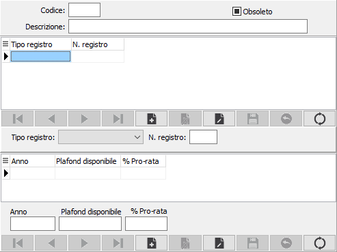

Attività Iva
Il programma, da utilizzarsi se l'utente gestisce più attività Iva, consente appunto di definire i parametri per tale gestione.

La finestra video si articola su due sezioni: la prima è riservate alla definizione del codice e descrizione di ciascuna attività. Per ciascuna di esse devono essere indicati i tipi di registro Iva gestiti e soprattutto i relativi numeri di sezionale utilizzati.
Nella seconda sezione video può essere invece inserita la percentuale di pro-rata ed il plafond disponibile per anno solare, riferita all’attività indicata dal codice. Se attivata in configurazione la gestione Azienda agricola sarà presente il campo per definire la tipologia di azienda agricola.